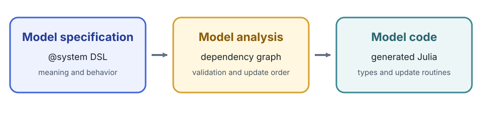

DSL Syntax
Cropbox declarations resemble Julia, but @system parses them as a domain-specific language. This reference describes the accepted public syntax and the meaning of each part.

The declaration states what each variable means, how it behaves, and what it depends on. Cropbox analyzes those dependencies, validates that a usable update order exists, and generates the Julia model type and update routines. The DSL is therefore declarative even though its expressions use familiar Julia syntax.
System declaration
@system name[{patches...}][(mixins...)] [<: supertype] begin
# variable declarations...
endThe declaration block may be omitted for a system composed entirely from mixins.
@system WeatherModel(Weather, Phenology, Controller)Name and mixins
@system Model(A, B, Controller) begin
# variable declarations...
endDefinitions are combined from left to right. Later mixins take precedence when the same public variable name is declared more than once; declarations in the new block can complete or replace the merged result. Use look(Model) to verify the resulting surface.
Controller is normally present only in a root system that will be passed to instance, simulate, or visualize. Nested components receive context and configuration from their parent.
Variable declaration grammar
name[(args...; kwargs...)][: alias] [=> body]
~ [behavior][::static_type|<:dynamic_type][(tags...)]Every part except name is optional, although useful model variables normally have a body, behavior, or explicit type.
@system Example(Controller) begin
base: base_temperature => 5 ~ preserve(parameter, u"°C")
temperature => 20 ~ preserve(parameter, u"°C")
rate(temperature, base): development_rate => temperature - base ~ track(min = 0, u"K")
endName and alias
name is the identifier used in equations and configuration. alias is a second public name for the same state object.
LAI: leaf_area_index ~ trackBoth s.LAI and s.leaf_area_index refer to the same state. Configuration and output should normally use the short declared name because it is less likely to change than descriptive prose.
A name beginning with one underscore is private to the declaring system and is canonicalized internally. Double-underscore names are not canonicalized this way. Private-name behavior is primarily for package authors; do not depend on the generated internal name in user code.
Dependencies
Positional entries bind values under their declared names.
mean(TMAX, TMIN) => (TMAX + TMIN) / 2 ~ track(u"°C")A default-like entry changes the local binding name or selects a variable from a nested system.
date(t = calendar.time) => Dates.Date(t) ~ track::date
response(T = weather.temperature, k = coefficient) => T * k ~ trackBoolean expressions can be dependencies. Cropbox extracts the referenced variables and preserves the expression.
active(emerged & !mature) ~ flagEntries after ; are explicit arguments of a function-like behavior rather than automatically bound model dependencies. They are used by call and integrate.
conductivity(curve; water_content) => curve(water_content) ~ call(u"m/d")
area(scale; x) => scale * x^2 ~ integrate(from = 0, to = 1)Body
The expression after => computes an initial or updated value according to the behavior.
x(a, b) => a + b ~ trackA begin ... end block may hold a longer equation. Its last expression becomes the result.
stress(T, lower, upper) => begin
raw = (T - lower) / (upper - lower)
raw
end ~ track(min = 0, max = 1)For behaviors that support them, the min and max tags bound the value after evaluation, providing the DSL equivalent of clamping without hiding the bounds inside the equation body.
When the body is omitted, many behaviors use the first dependency or a behavior-specific default. Prefer an explicit body when omission would make the scientific meaning unclear.
Behavior
The behavior after ~ controls storage and updates. Common forms are:
p => 1 ~ preserve(parameter)
y(x) => 2x ~ track
z(y) ~ accumulate
done(z, target) => z >= target ~ flagSee Behaviors and Tags for the complete user-facing inventory and supported tag combinations.
Tag order does not change the meaning, but this documentation follows a consistent reading order: semantic tags such as parameter, min, max, and when come first, while the unit string comes last. For example, write preserve(parameter, u"kg") and track(min = 0, u"K").
Static and dynamic type annotations
::T resolves a static Cropbox type; <:T uses a dynamic subtype-compatible type.
count => 0 ~ preserve::int
date(calendar.date) ~ track::date
child ~ ::ChildSystem
resource ~ <:AbstractResourceBuilt-in aliases include:
| Alias | Julia type |
|---|---|
int, uint | Int64, UInt64 |
float, bool | Float64, Bool |
sym, str | Symbol, String |
date, datetime | Date, ZonedDateTime |
∅, _ | Nothing, Missing |
T[] denotes Vector{T}. A type can also use a braced union such as ::{sym|∅}. Most numeric behaviors default to Float64, flag defaults to Bool, provide to a DataFrame, and produce to a system vector.
Tags
Tags are comma-separated flags, keyword assignments, or a unit literal.
p => 1 ~ preserve(parameter, min = 0, u"kg")
x(rate) ~ accumulate(init = x0, when = active, u"kg")The unit literal is shorthand for unit = u"...". Unsupported tags cause an error while expanding @system; tags are not silently ignored.
Plain typed variables and child systems
A declaration does not require a Cropbox behavior.
calendar(context, config) ~ ::Calendar
children(context) => [Child(; context) for _ in 1:3] ~ ::Vector{Child}These declarations construct or reference ordinary values and systems using the generated constructor/update rules. They are common in composite models. Use a behavior when the value needs behavior-specific storage, tags, or updates.
Context and override patterns
Reusable components commonly declare a context placeholder:
context ~ ::Context(override)The parent then constructs the child with its own context. Similarly, a mixin can declare a placeholder behavior with override, and the final system can supply the concrete declaration. An override declaration cannot carry an update body; it receives its value from construction or a replacing declaration.
Advanced system headers
The following header forms are useful for framework components and specialized composition, but they are not part of most model declarations.
Public supertype
@system DailyClock(Clock) <: Clock begin
# ...
end<: assigns the public system supertype. Use it when another declaration expects a family of compatible systems.
Header patches
Header braces support type substitution and system constants.
@system DailyContext{Clock => DailyClock}(Context) <: Context
@system S{coefficient = 2}(Controller) begin
y => coefficient * 3 ~ preserve
endType substitution rewrites declarations that refer to the old type so they use the replacement type. Constants are resolved while Cropbox constructs the generated code. Keep patches close to the system that needs them and explain them in the system docstring.
Documentation strings
Julia docstrings immediately before a system or variable declaration are stored for look and @look.
"""Daily thermal-time model."""
@system ThermalTime(Controller) begin
"""Base temperature below which no thermal time is accumulated."""
Tb => 5 ~ preserve(parameter, u"°C")
endDocument units, valid ranges, source references, and whether a parameter is species-, cultivar-, or experiment-specific.
Reading a declaration reliably
When a line is unfamiliar, identify these parts in order:
- public name and alias;
- positional dependencies and their local bindings;
- explicit function arguments after
;; - body expression;
- behavior and value type;
- unit, initialization, bounds, conditions, and ownership tags.
Then inspect it with look(System, :variable) and trace its dependencies before changing configuration.